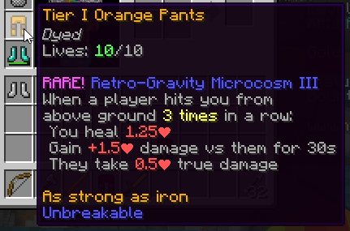

| The Pit 1.0.3 - No-Rage Patch |
|  |
| Retro-Gravity Microcosm. |
| Release Date | Dec 17th, 2020 |
| Forums Approval | 98.6% |
| Forums Author | Minikloon |
| ← Rage Pants — Tryhard Patch →
|
The Pit 1.0.3, also known as the No-Rage Patch, was a patch for the Hypixel Pit. It features several balance changes and two new mystic enchantments.
A new Rage Pants enchantment, Brakes!, was added. It caps the Speed effect on targets and reduces damage taken from players at a higher y-elevation than the user.
A new Mystic Pants enchantment, Retro-Gravity Microcosm, was also added. It provides a set of bonuses when attacked three times in a row by a player who is not on the ground.
Balance changes:
- (↑) Critically Funky values changed again:
- Critically Funky I: Take only (90% → 80%) damage from critical hits.
- Critically Funky II: Take only (80% → 65%) damage from critical hits. After reducing damage, your next attack deals +14% damage.
- Critically Funky III: Take only (70% → 50%) damage from critical hits. After reducing damage, your next attack deals +30% damage.
- (↓) Singularity values changed again:
- Singularity I: The most damage you can take at once is (2.0♥ → 2.5♥).
- Singularity II: The most damage you can take at once is (1.5♥ → 2.0♥).
- Singularity III: The most damage you can take at once is (1.0♥ → 1.5♥).
- (↓) Sybil III: You count as (5 → 4) players to enchantments that count players.
- (↓) Internal cooldown added to Regularity to stop it from activating multiple times in a row.
Other changes:
- Three unobtainable achievements were made obtainable.
- Fixed updates and balances to enchantments causing items they are on to forget that they had a Totally Legit Gem applied.
- A bread duplication glitch was fixed.